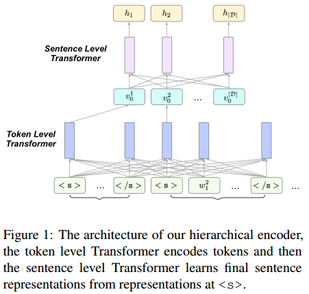
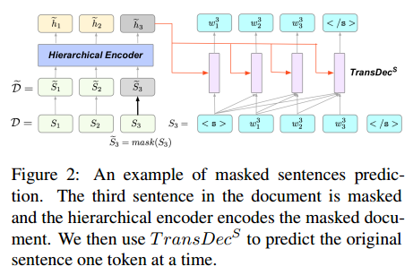
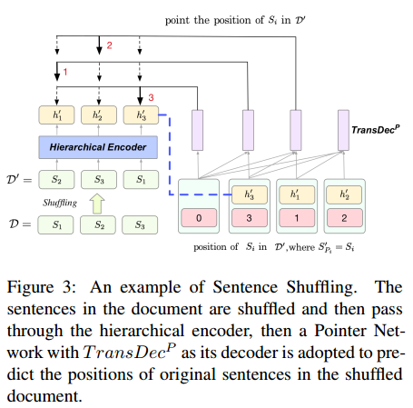
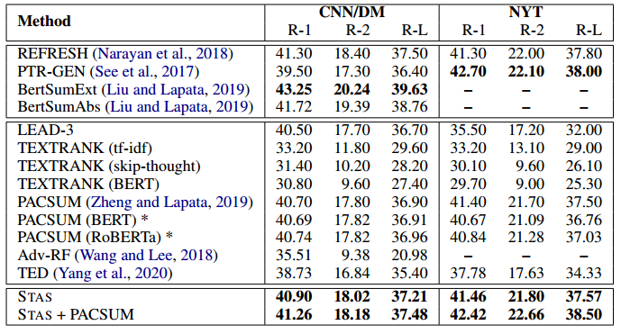

出处：Findings of the Association for Computational Linguistics: EMNLP 2020, pages 1784–1795
一句话版：本文利用Transformer中的注意力权重信息来对文档中的句子进行排序，从而进行摘要的抽取。
因为基于神经网络的无监督文档摘要抽取方法是一件十分困难的任务。相关研究也不是很多。利用句子之间的注意力权重的这个思想，与之前的利用重构权重的思想可以说是十分相似的。之前自己就基于这种思路思考进行无监督抽取式摘要的方法，但是终于被别人抢先实现了……
背景
- 文档摘要分为抽取式和生成式摘要方法。
- 之前的方法需要label data，但是label data很少且难以构建。并且对所有领域的文本都构建label data是不现实的。所以本文研究无监督方法。
- 之前的无监督抽取式摘要方法的主要内容是识别文档中的重要内容。之前最流行的方法主要是基于图排序的方法。
- 近来有很多无监督生成式摘要方法。但是这些方法无法保证摘要的语法正确性，以及与原文的一致性。
- 根据HIBERT引出本文的思路。即利用Transformer模型中的注意力权重信息来进行重要内容的识别，并进而进行摘要抽取。
- 在CNN-DailyMail和NYT数据集上进行了测试。
- 代码
模型
Document Modeling

文档的编码器如图1所示。整个编码器由层次的Transformer构成。首先单词级别的Transformer将文档的单词作为输入，每个句子被<s>与</s>符号分割开，分别表示句子的开头和结尾。
单词级别的Transformer输出每个单词的contextualized的表示$(\mathbf{v}_ {0}^{1}, \mathbf{v}_ {1}^{1}, …, \mathbf{v}_ {|S_{1}|}^{1}, …, \mathbf{v}_ {j}^{}, …, \mathbf{v}_ {0}^{|D|}, …, \mathbf{v}_ {S_ {|D|}}^{|D|})$，然后每个句子的句首符号<s>的表示作为该句子的句子表示，即$\mathbf{V}=(\mathbf{v}_ {0}^{1}, \mathbf{v}_ {0}^{2}, …, \mathbf{v}_ {0}^{|D|})$，输入到下一层的句子级别的Transformer。然后句子级别的Transformer通过计算句子级别的自注意力，输出句子的contextualized的表示以及注意力的权重：
$$\mathbf{H,A} = Trans^S(\mathbf{V})$$
由于Transformer中的注意力包含多层以及多个头，因此为了得到最终的注意力权重$\mathbf{A}$，本文先对各个头的注意力权重取平均，然后对各个层取平均。
Pre-Training
对于模型的训练目标，本文则是使用了两种预训练任务对模型进行预训练。
Masked Sentences Prediction 与 Sentence Shuffling。

Masked Sentences Prediction任务如图2所示。以15%的概率随机屏蔽掉部分句子，也就是将句子中的所有单词替换为[MASK]符号。

Sentence Shuffling 则是将原文中的句子打乱顺序，并预测句子的正确顺序。
最后训练目标是两部分的损失之和。
Unsupervised Summarization
抽取式摘要的主要目标就是选择出文档中最重要的句子。因此，得到预训练之后的模型之后，本文的方法就可以不需要进行进一步的fine-tune，直接来对句子进行排序。
第一个排序标准是根据文档中句子的预测概率。一个文档$D=(S_1, S_2, …, S_ {|D|})$的概率为:
$$
p(\mathcal{D})=\prod_ {i=1}^{|\mathcal{D}|} p\left(S_ {i} \mid S_ {1: i-1}\right) \approx \prod_ {i=1}^{|\mathcal{D}|} p\left(S_ {i} \mid \mathcal{D}_ { {\neg} S_ {i} } \right)
$$
然而预测$p(S_i|S_{1:i-1})$不方便，因为这里使用的模型都是双向的。但是根据之前预训练的masked sentences prediction任务，能够很方便地预测$p(S_i|D_{\neg S_{i}})$。
因此，这里将每个句子的生成概率转换成生成该句子时生成每个单词的概率，并同时根据句子的长度进行归一化，以使得不同长度句子之间能够相互比较：
$$
\hat{r}_ {i}=\frac{1}{\left|S_{i}\right|} \sum_{j=1}^{\left|S_{i}\right|} p\left(w_{j}^{i} \mid w_{0: j-1}^{i}, \mathcal{D}_ {\neg S_{i}}\right)
$$
同时对整个文档的句子得分进行归一化：
$$
\widetilde{r}_ {i}=\frac{\hat{r}_ {i}}{\sum_{j=1}^{|\mathcal{D}|} \hat{r}_ {j}}
$$
这样得到的就是一片文档中，每个句子i的预测得分。
第二个排序标准是，建模其他句子对当前句子的重要性。也就是将每个句子看作一个节点，得到的注意力权重看作是节点之间的边的权重，这样得到一个图。
这里不是直接使用每个节点的度作为得分，而是在前面的预测的概率结果上进行了一次传播：
$$
r_ {i}^{\prime}=\sum_ {j=1, j \neq i}^{|\mathcal{D}|} \mathbf{A}_ {j, i} \times \tilde{r}_ {j}
$$
最终的每个句子的得分为两个排序标准的加权和：
$$r_i=\gamma_{1}\tilde{r_{i}}+\gamma_{2}r_{i}’$$
实验
本文在CNN-DailyMail与NYT上进行实验。模型由一个Transformer encoder和两个预训练任务的decoder构成。具体模型参数参见原文。在进行摘要抽取的时候，本文设定抽取长度为3个句子。并且实验发现在CNN-DailyMail上用trigram blocking有效，在NYT上无效。
实验的效果以及baselines如图所示。

此外，实验中还进行了ablation study来验证文中提出的两个预训练任务以及两个排序标准是否都有用。以及对于得到的注意力权重，使用$\mathbf{A_{j,i}}$和$\mathbf{A_{i,j}}$来计算$r_{i}’$的差别。实验中显示差别还挺大，这个结果还比较令人意外。但是感觉缺乏合理的令人信服的解释。
此外，还验证了句子的位置对于结果的影响。
总结
本文提出了一种基于Transformer的自注意力权重的无监督单文档摘要方法。基于神经网络的无监督的单文档抽取式摘要方法的确稀少，本文已经可以算是一个初步的探索了。我个人觉得还是非常有意义的。这也是我自己一直希望有所突破的方向。